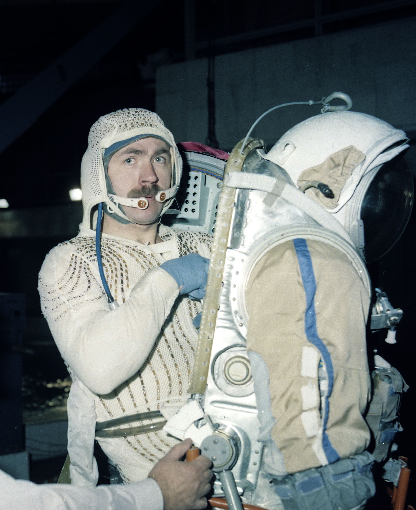
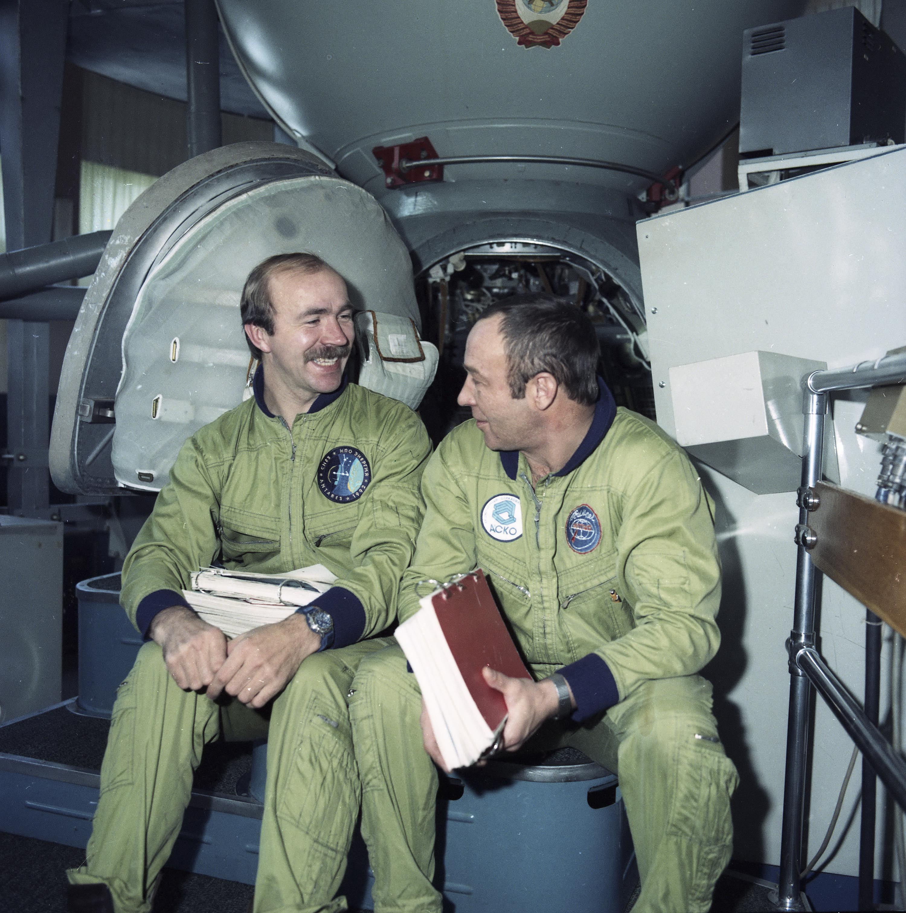

Борис Валентинович родился в Иркутске 18 декабря 1934 года. Его мать, Евгения Измайловна, также иркутянка, с 1932 по 1938 год училась в Иркутском мединституте, а после его окончания получила направление в г. Прокопьевск Кемеровской области, где Борис в 1952 году успешно окончил среднюю школу, а затем – Сталинградское военно-авиационное училище лётчиков.
Служил в авиационных частях противовоздушной обороны Московского военного округа, летал на самолёте МИГ-17. Как-то Волынова вызвали к командиру полка. Перед кабинетом сотрудник особого отдела дал ему подписать бумагу о неразглашении темы разговора. Находившийся в кабинете подполковник спросил Волынова, согласен ли он летать на технике, более совершенной, чем самолёты, на больших скоростях и высотах. Борис Валентинович ответил согласием и был направлен на медкомиссию в Москву. Тесты и проверка здоровья заняли 40 суток. Так Волынов оказался в первом отряде космонавтов.

Волынов и Желобов
По признанию Бориса Валентиновича, «труден и сложен путь в космос. Очень труден». Это признание он сделал в статье «У истоков космических свершений», опубликованной в газете «Красная звезда» 18 декабря 1976 года. Пройдя полный курс подготовки к полётам на кораблях серии «Восток» он был одним из дублёров лётчиков-космонавтов В. Ф. Быковского (1963) и Г. Т. Берегового (1968). В 1968 году Волынов окончил Военно-Воздушную академию им. Н. Е. Жуковского. А его первый полёт в космос состоялся с 15 по 18 января 1969 года. Он был командиром трёхместного космического корабля «Союз-5». В экипаже корабля были также бортинженер А. С. Елисеев и космонавт-исследователь Е. В. Хрунов. В этом полёте впервые в мире была осуществлена стыковка двух пилотируемых космических кораблей и, таким образом, образована орбитальная станция из двух кораблей. А. С. Елисеев и Е. В. Хрунов перешли в «Союз-4», пилотируемый В. А. Шаталовым, а «Союз-4» возвратился за землю. Командир «Союза-5» Б. В. Волынов летал в космосе ещё сутки.
О том, что в космосе земляк, в Иркутске узнали быстро. Иркутяне отправляли в его адрес многочисленные телеграммы и письма. Особую гордость они испытывали потому, что позывным корабля «Союз-5» было слово "Байкал", выбранное по желанию Б. Волынова. Позднее космонавт рассказывал: «… Родился в Иркутске. Знакомых там, правда, осталось мало. Но всё равно, пролетая, всегда отмечаю: вот Иркутск. Байкал – особая статья. От Байкала – наш позывной».
18 января Волынов сориентировал корабль для схода с орбиты, но в нужный момент отказала автоматика системы спуска. С Земли успокоили, и он стал спускаться вручную. Корабль «Союз» состоял из отсеков, которые должны были отделиться при спуске, а на землю приходил только отсек, в котором находилась кабина космонавта. Как вспоминал космонавт позднее, «… при ручном спуске не сработали цепи болтов, разделяющих корабль. И корабль вошёл в атмосферу в нештатном комплекте: отошёл алюминиевый бытовой отсек, отошёл двигательный отсек, а приборный остался… Корабль шёл в атмосферу входным люком, сделанным из титана… Вокруг «связки» двух отсеков бушевало адское пламя, испаряя металл обшивки и превращая его в раскалённую плазму..."
Как вспоминал Волынов, он каждой клеточкой, каждым нервом почувствовал, что от смерти его отдаляют минуты. Но чувство долга оказалось сильнее чувства страха. Ему удалось подавить панику и сделать так, чтобы сохранились результаты труда и риска. Он вырвал из бортжурнала нужные страницы, касающиеся стыковки «Союзов», плотно свернул их и засунул в середину журнала, так как знал, что бумага обгорает с боков, а середина может уцелеть. Потом он наговорил на магнитофон всё о ситуации, случившейся с ним, понимая, что на Земле это поможет выяснить причины неудачного спуска. И всё же чудо свершилось: на высоте 80-90 км сработали термодатчики пожарной защиты и приборный отсек отлетел. Спускаемый аппарат по крутой траектории пошёл к Земле. На высоте десяти километров открылся парашют и, казалось, все неприятности позади, но начали закручиваться стропы основного парашюта, потом жгут строп стал раскручиваться в обратную сторону. Приземление было жёстким, но космонавт остался жив, получив на память перелом корней верхних передних зубов. Когда выбрался из кабины, около часа ожидал поисковую группу, а в казахстанской степи стоял мороз в -380. После аварии медики, психологи, руководители полётов пришли к выводу – в космосе Волынову больше не бывать. Долгое время обстоятельства этого полёта были засекречены. И лишь в начале XXI века Б. Волынов рассказал об обстоятельствах приземления.
После практического отстранения от полётов, Волынов сделал всё возможное и невозможное, чтобы его вновь допустили до полётов. Преодолев психологический барьер, он продолжал упорно тренироваться. И 6 июля 1976 года Б. В. Волынов совершил второй полёт в космос на корабле «Союз-21» в качестве командира корабля. В составе экипажа был лётчик-космонавт Виталий Жолобов. В этом полёте была впервые осуществлена стыковка с орбитальной станцией «Союз-5».
Б. В. Волынов награждён
двумя орденами Ленина,
орденом Красной Звезды,
орденом «За службу Родине в Вооружённых Силах СССР» III степени, орденом «За заслуги перед Отечеством» IV степени.
Ему присуждены Золотая медаль им.К.Э. Циолковского Академии наук СССР и Почётный диплом им. В.М. Комарова (ФАИ),
Орден Дружбы — за большой вклад в развитие отечественной пилотируемой космонавтики и многолетнюю плодотворную общественную деятельность,
медаль «За отличие в охране государственной границы СССР» — за выполнение программы полёта на орбитальной станции «Салют-5»..
Он также награждён орденами Болгарии, Польши, Венгрии. Б. В. Волынов - Почётный гражданин городов Иркутска, Калуги, Кустаная, Прокопьевска, Воркуты. В г. Прокопьевске ему при жизни установлен бронзовый бюст как дважды Герою СССР.Также ему вручена премия Правительства Российской Федерации имени Ю. А. Гагарина в области космической деятельности (2011) — за развитие отечественной пилотируемой космонавтики, личное участие в осуществлении первых пилотируемых полетов, развитие международного сотрудничества в области космической деятельности, популяризацию достижений отечественной космонавтики.
Десять юбилейных медалей:
Орден Государственного Знамени ВНР (ВНР, 1973 год).
Медаль «25 лет народной власти» (НРБ, 1969 год).
Медаль «За укрепление братства по оружию» (НРБ).
Медаль «100-летие падения Османского ига» (НРБ).
Медаль «Братство по оружию» (ПНР).
Медаль Кубы.
Медаль Алексея Леонова (29 августа 2014 года)
Борис Валентинович – активный член иркутского землячества «Байкал» в Москве. С членами землячества неоднократно бывал в Иркутске, встречался с иркутскими студентами, бывал и в районах области.
75-м космонавтом России и 289-м космонавтом мира стал уроженец Иркутской земли, лётчик-космонавт РФ Александр Фёдорович Полещук.
Александр Фёдорович родился 30 октября 1953 года в г. Черемхово. Саша с детских лет мечтал стать космонавтом и целенаправленно шёл к осуществлению своей мечты. Его увлекала физика и математика — учился он блестяще. Успевал заниматься в музыкальной школе, аэроклубе, фотокружке. А ещё перечитал все научно-фантастические книги, которые были в черемховских библиотеках. Когда они с матерью, Валентиной Сергеевной, были в Москве, в книжных магазинах купили очень много книг о космосе.

Погружение в
гидролаборатории. Подготовка
к выходу в открытый космос.
После окончания в 1971 году средней школы, А. Полещук поступает в Московский авиационный институт им. Серго Ордженикидзе на факультет «Производство летательных аппаратов». После окончания института в 1977 – 1989 гг. работает в научно-производственном объединении «Энергия». Он занимался организацией испытаний инструментов и отработкой внекорабельной деятельности космонавтов по техническому обслуживанию и ремонту орбитальных станций, разрабатывал и совершенствовал инструменты и приспособления, с которыми космонавты работали в открытом космическом пространстве. Но Полещук не оставлял надежды стать космонавтом и благодаря своей настойчивости добился того, что в 1989 году его зачислили в отряд космонавтов. С сентября 1989 по январь 1991 Полещук прошёл общекосмическую подготовку и 1 февраля 1991 года Межведомственная квалификационная комиссия присвоила ему квалификацию лётчика-космонавта. В 1992 году в качестве бортинженера Александр Фёдорович был включён в состав дублирующего российско-французского экипажа. А с 24 января по 22 июля 1993 года он совершил космический полёт в качестве бортинженера на космическом корабле «Союз ТМ-16» и орбитальном комплексе «Мир». Экипаж «Союза ТМ-16», командиром которого был Г. М. Манаков, находился в космосе 179 суток 43 минуты 46 секунд. А. Ф. Полещук за это время два раза выходил в открытый космос и в общей сложности провёл там 9 часов 58 минут.
В письме родным из космоса он написал:
«Работа космонавта в космосе – это самое интересное, что можно было придумать людям. Тут объединяются разные профессии – и лётчика, и врача, и исследователя по многим направлениям, и даже актёра. Но самое интересное – это перманентная невесомость и изумительные виды Земли». Он говорит, что «наша планета из космоса кажется очень маленькой и очень красивой. И звёзды можно разглядеть гораздо ближе – виден их цвет, глаз различает кольца Сатурна».
Указом Президента РФ от 23 июля 1993 года за успешное выполнение заданий полёта и проявленные мужество и героизм Полещуку Александру Фёдоровичу было присвоено звание Героя РФ с вручением медали «Золотая Звезда».

Второй раз побывать в космосе нашему земляку не удалось, хотя он об этом мечтал. 20 января 2003 года решением Государственной Медицинской комиссии (ГМК) по состоянию здоровья он был признан временно не годным к полётам, а 25 марта 2004 года уволен с должности космонавта-испытателя по выслуге лет.
Работал начальником отдела внебортовой деятельности. В его обязанности входило всё, что связано с поисковыми операциями после приземления, а также техническое обеспечение станции. Помимо звания Героя РФ А. Ф. Полещук награждён офицерским знаком французского ордена «За заслуги»
Награды:
Герой Российской Федерации (Указ Президента Российской Федерации от 23 июля 1993 года № 1061)
Лётчик-космонавт Российской Федерации (Указ Президента Российской Федерации от 23 июля 1993 года № 1060)
Медаль «За заслуги в освоении космоса» (12 апреля 2011 года) — за большие заслуги в области исследования, освоения и использования космического пространства, многолетнюю добросовестную работу, активную общественную деятельность
Офицер Национального ордена «За заслуги» (Франция, май 1998).
Дмитрий Юрьевич Кондратьев — космонавт, полковник ВВС РФ, бортинженер МКС-26, командир МКС-27.Герой Российской Федерации.
Биография
В 1986 году окончил 10 классов в Алма-Ате. В 1990 году окончил Качинское высшее военное авиационное училище летчиков (ВВАУЛ) имени А. Ф. Мясникова по специальности «командная тактическая истребительная авиация», получил диплом лётчика-инженера. В феврале 2012 года защитил диссертацию на соискание учёной степени кандидата экономических наук по теме «Государственное регулирование российского рынка ценных бумаг в условиях финансовой глобализации».
Служил в Бесовецком авиационном полку под Петрозаводском.
Полёт на МКС.
В качестве командира экипажа совершил полёт на корабле Союз ТМА-20.
Стартовал 15 декабря 2010 года в качестве командира корабля «Союз ТМА-20», бортинженера МКС по программе 26-й и командира 27-й основной экспедиции, вместе с астронавтами Паоло Несполи и Кэтрин Коулман. 17 декабря осуществлена стыковка корабля с Международной космической станцией.
Во время полёта совершил два выхода в открытый космос:
21 января 2011 года — продолжительностью 5 часов 22 минуты. Во время выхода космонавты установили на поверхности на большом диаметре рабочего отсека служебного модуля (СМ) «Звезда» моноблок системы высокоскоростной передачи информации и подключили его кабели к системе, так же демонтировали научную аппаратуру ИПИ-СМ и «EXPOSE-R» с поверхности СМ «Звезда», установили и подключили телекамеру на малом исследовательском модуле МИМ-1 «Рассвет» со стороны пассивного стыковочного агрегата.
16 февраля 2011 года — продолжительностью 4 часа 50 минут. Во время выхода космонавты установили на внешней поверхности МКС научную аппаратуру для эксперимента
«Молния-Гамма» по исследованию атмосферных вспышек гамма и оптического излучения в условиях грозовой активности и эксперимента «СВЧ-радиометрия». Космонавты сняли две панели «Компласт» с образцами конструкционных материалов и защитных покрытий, находившихся в условиях открытого космоса более 12 лет, и демонтировали устройство «Якорь».
Находясь на борту МКС, Дмитрий Кондратьев провёл сеанс радиосвязи с воспитанниками детских домов, учениками кадетских классов и ребятами из кружка авиамоделистов Петрозаводска. После возвращения на Землю, космонавт устроил встречу с общественностью Петрозаводска.
24 мая 2011 года спускаемый аппарат корабля «Союз ТМА-20» совершил мягкую посадку в 147 километрах восточнее города Джезказгана в Казахстане.
Продолжительность полёта Д. Кондратьева составила 159 суток 07 часов 16 минут.
Во время полёта Д. Кондратьев вёл свой блог на сайте Федерального космического агентства, а также был корреспондентом детской передачи «Пора в космос!» телеканала «Карусель».
25.07.2012 уволился из вооруженных сил и ЦПК и устроился на работу в коммерческой структуре, покинув отряд космонавтов.
Награды:
Герой Российской Федерации и Лётчик-космонавт Российской Федерации (3 марта 2012 года) — за мужество и героизм, проявленные при осуществлении длительного космического полёта на Международной космической станции.